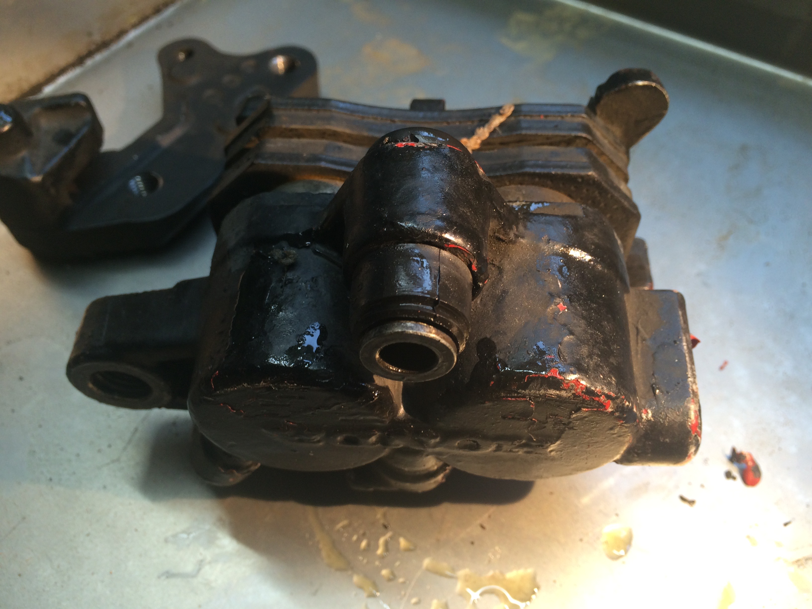
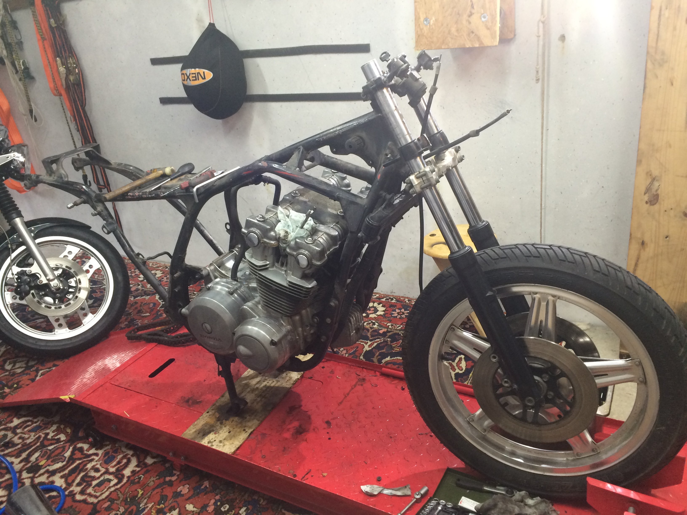
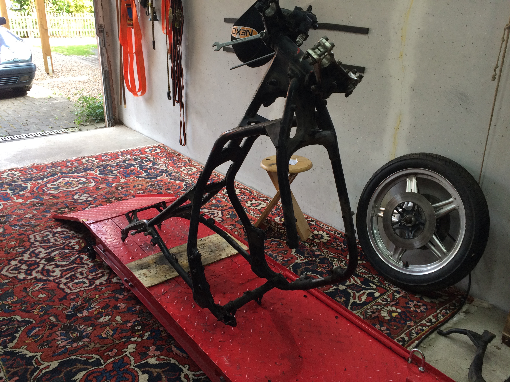
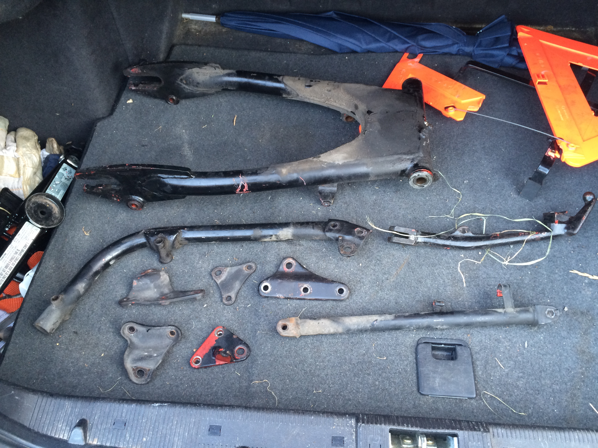
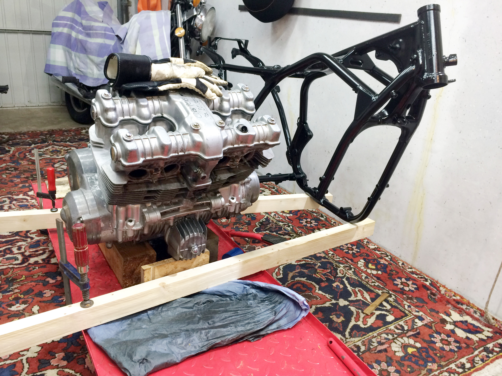
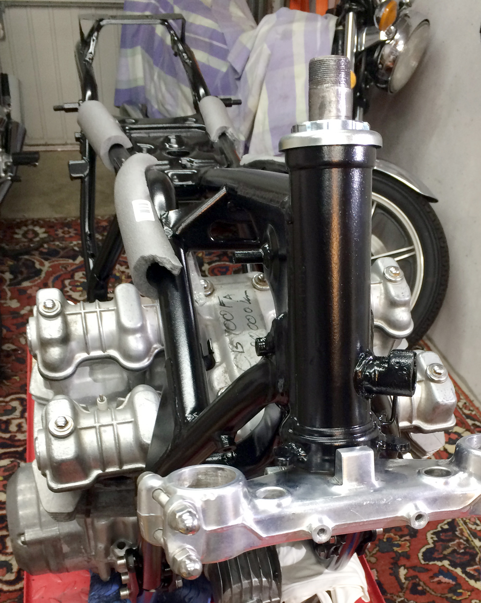
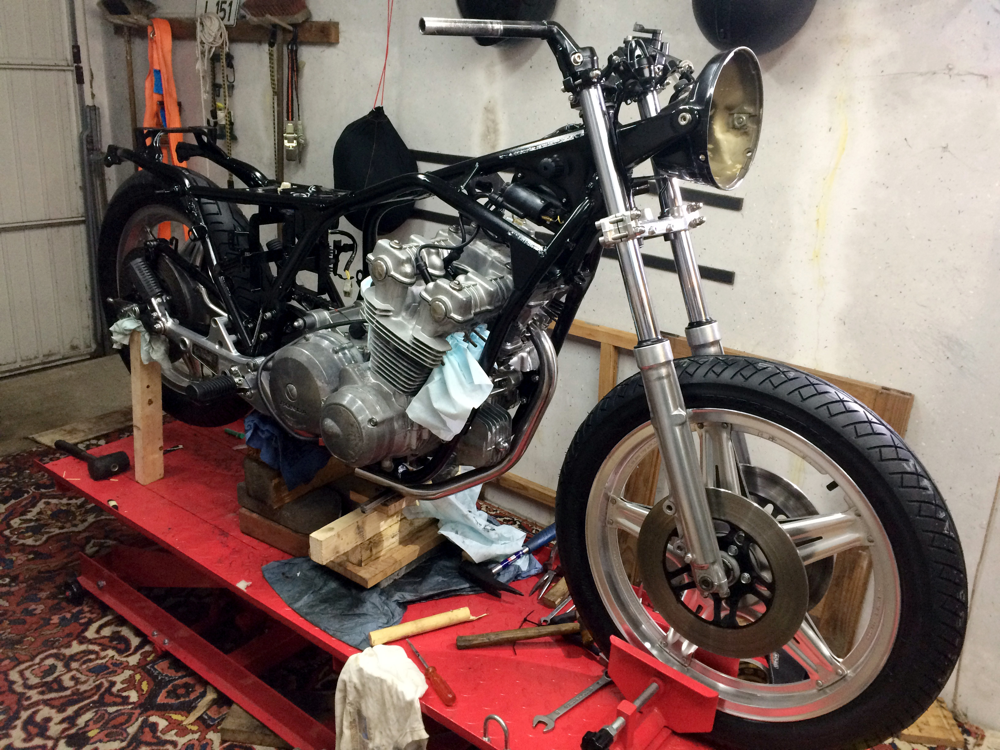
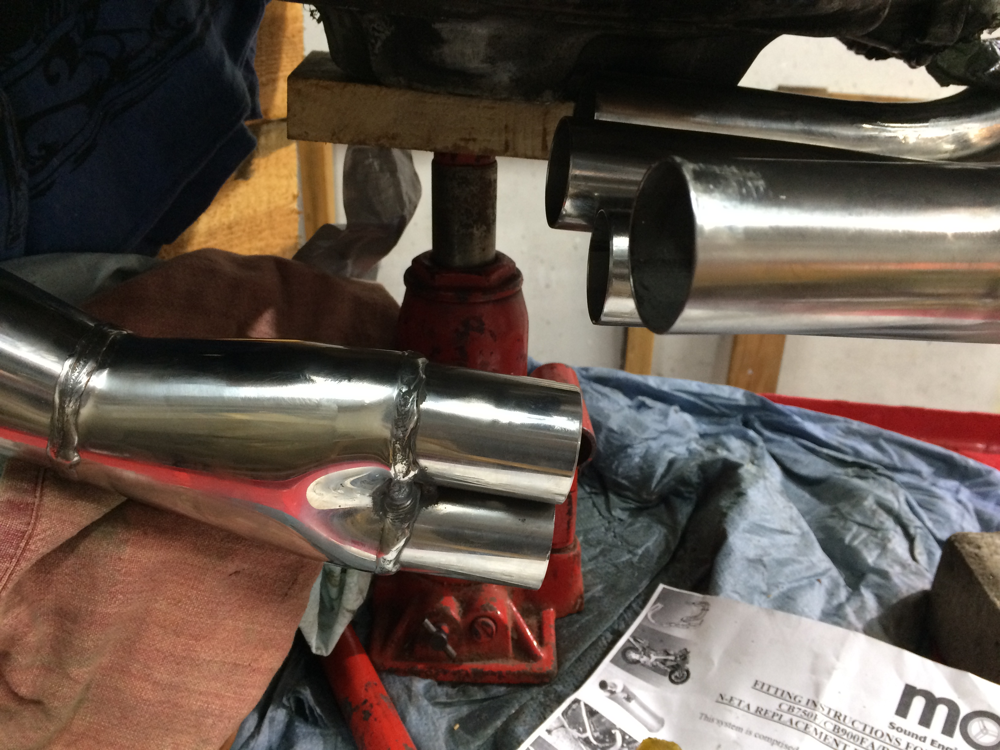
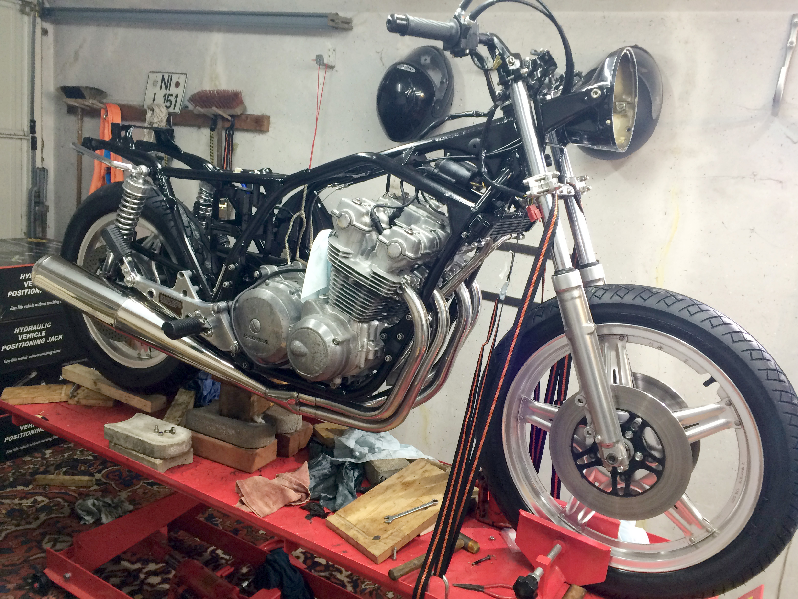

Project · Honda
CB900F Bol d'Or · 1981
A large Honda restored from the ground up – and eventually exchanged for a lighter 1970 CB450.
Big Honda, big task
The original engine could not be saved. A used replacement engine was found, and the machine was then rebuilt step by step: the frame, tank and further parts were repainted; the brakes were overhauled and painted. Chain, sprockets and tyres were also replaced – a restoration right down to the details.
The CB900F was introduced for the European market in 1979. The Bol d'Or name recalls Honda's successes in the French 24-hour endurance race; in 1981 Honda introduced the European CB900F2 Bol d'Or with a fairing.
In the end, the 900 was too heavy for me at the age of 64. I exchanged it for a 1970 Honda CB450 – on paper, for the less well-restored motorcycle. But the lighter CB450 is the more interesting machine to me. That will be a story of its own.
Photo gallery
The beginning
The first photographs of this restoration – more will follow.
As the original exhaust system was no longer available, a stainless-steel Motad 4-into-1 system from England was fitted.










